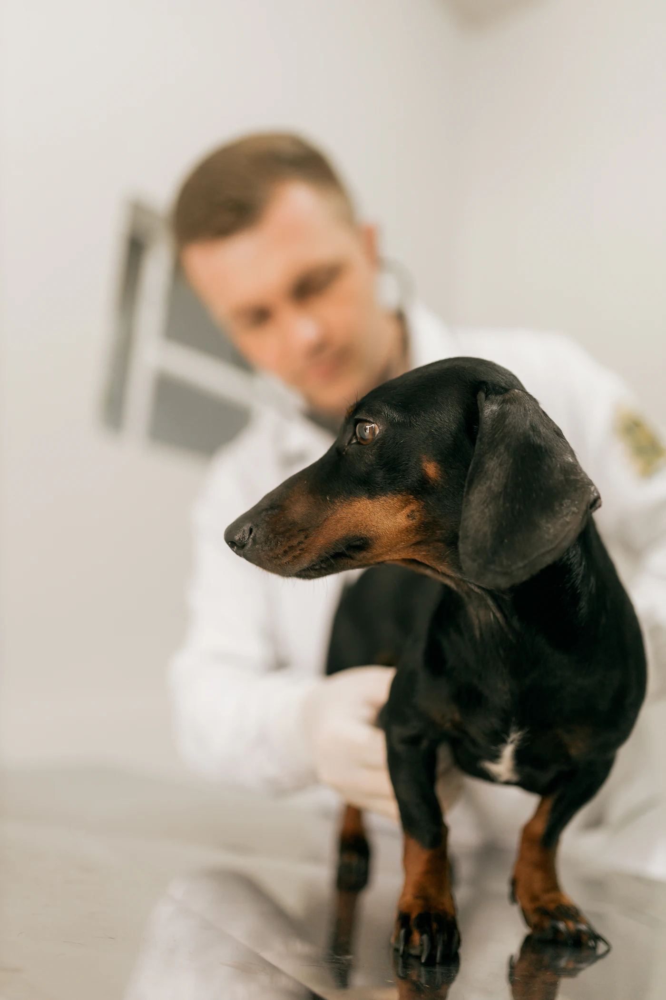
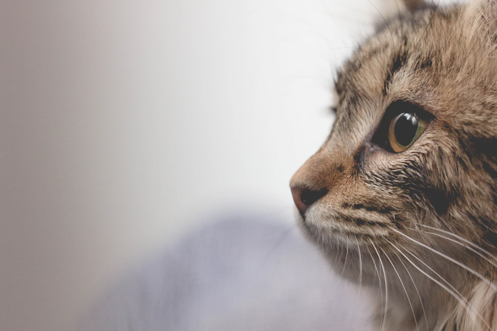
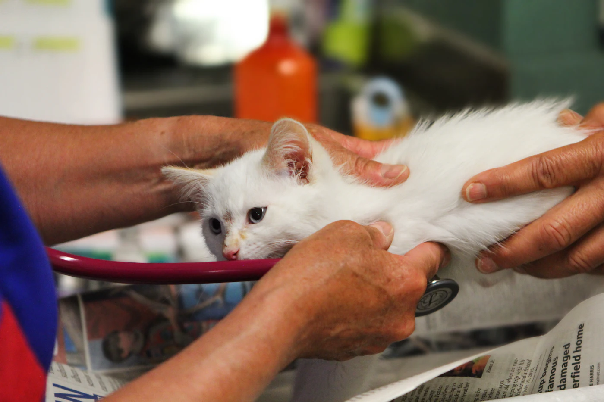
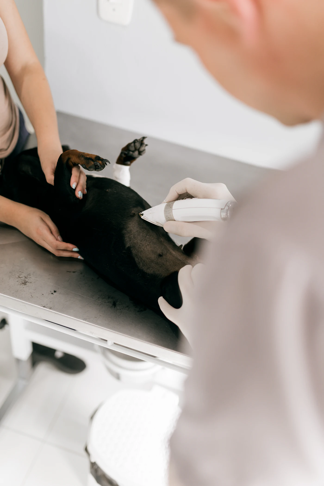
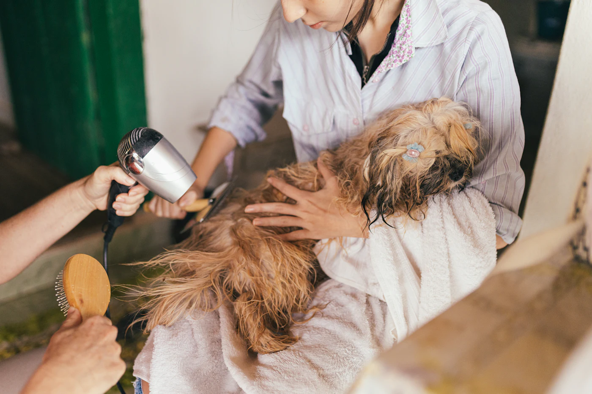
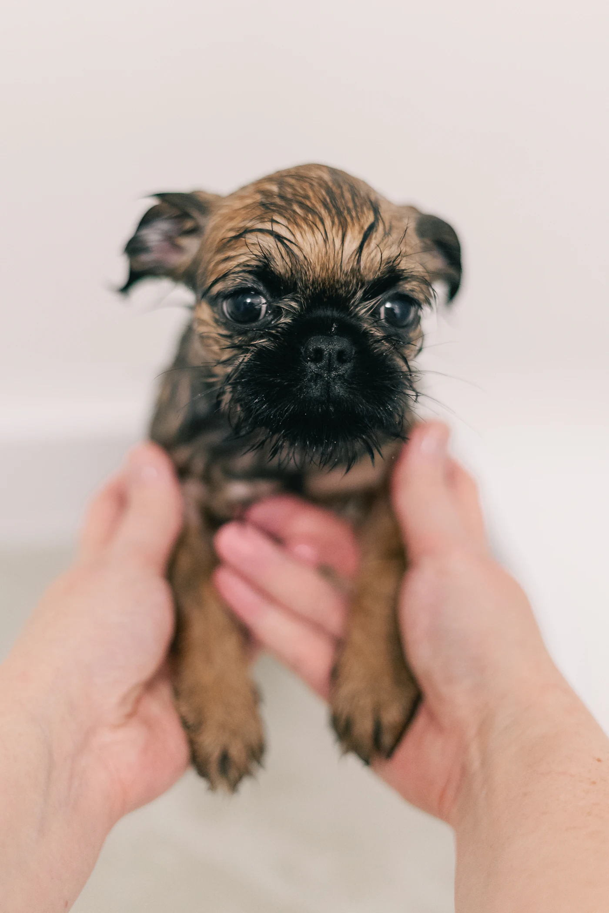

Consultas

- Consulta clínica, $18.000
- Control de cachorros
- Análisis y ecografías
- Castraciones con turno
- Gerontología para mascotas grandes
Huella veterinaria
Consultas, vacunas, peluquería canina y pet shop en Flores. Pedí turno por WhatsApp y te contestamos en el día.
Pedir turno por WhatsAppLunes a viernes de 9 a 20 h, sábados de 9 a 14 h
Contanos quién es y cuándo nació, y te mostramos qué vacunas le tocan y cuándo. Lo ajustamos en la consulta.
Plan de un cachorro
Elegí la fecha de nacimiento
Es un plan orientativo. El veterinario lo confirma según la salud y la historia de tu mascota.

Abrimos Huella en 2014, en el mismo local de Yerbal donde antes había una mercería. Desde entonces atendimos a casi todos los perros y gatos de la cuadra, y a varios de sus hijos.
Nos gusta la veterinaria de barrio: la que te conoce por el nombre de tu perro, te contesta un mensaje un domingo y te dice cuándo no hace falta venir.
Somos tres veterinarias, una peluquera y Pancho, el gato que vive en el mostrador. Te esperamos.
Dra. Laura Méndez
Veterinaria, MP 4521





Sí, por orden de llegada. Con turno no esperás: pedilo por WhatsApp y te damos el horario en el día.
La consulta clínica sale $18.000. Las vacunas se cobran aparte, según cuál sea.
Sí, en Flores y Floresta, de lunes a viernes. Ideal para gatos que no toleran el viaje o mascotas grandes.
La libreta sanitaria si tiene, y si es un gato, en su transportadora. Si no tiene libreta, se la hacemos.
Efectivo, débito, crédito o Mercado Pago.
Para turnos, dudas o resultados de análisis, escribinos.
11 3577-8063Yerbal 2400, Flores
Urgencias las 24 h al mismo número